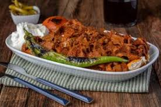
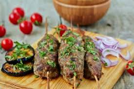
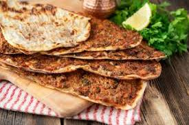
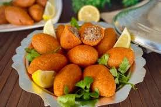
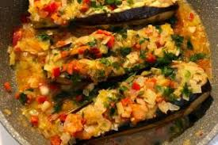
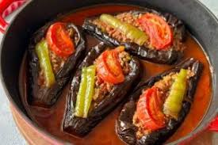
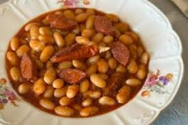
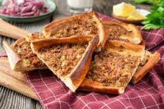
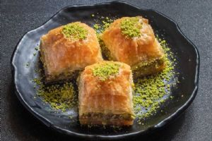

Yoğurt ve tereyağı ile soslanmış döner üzerine yapılan lezzetli bir yemek.

İnce kıyılmış dana etiyle yapılan, közlenmiş sebzelerle servis edilen nefis bir kebap çeşidi.

İnce hamur üstüne dana kıyması, soğan ve baharatlarla yapılan yemek çeşidi.

bulgurun içine kıyma konularak hazırlanan, kızartılarak servis edilen lezzet.
10 TL Popüler
Biber ve domatesle doldurulmuş zeytinyağla pişirilen bir sebze yemeği.
10 TL Popüler
Patlıcanın ortadan ikiye ayrılıp içine kıyma harcı doldurulmasıyla yapılan bir yemek.
10 TL Popüler
Kuru fasülyenin haşlanarak pişirilmesiyle oluşturulan bir yemek.
18 TL
Üzerine sucuk, peynir, kıyma veya kuşbaşı et konulan, açık/kapalı hamurlu bir yemek.
25 TL
Fıstık, şeker ve ince yufkayla hazırlanan bir tatlı çeşidi.
15 TL